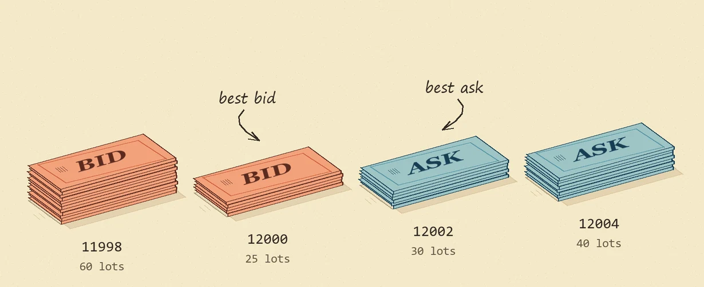

Where did the best bid go?
In my C++ order book, someone is bidding for 25 lots at 12000. The next update takes all 25 off the book. Which price moves to the front?
Step through the sample tape, then look inside the bitmap that finds the price.

The highest bid is 12000. The lowest ask is 12002.
The catch was the review queue.
I tested whether updating a fraud threshold every month would catch more fraud than keeping it fixed. Across six simulated months the monthly policy caught 28 more cases.
It also sent 31 more transactions for review. Give both policies the same number of reviews and the difference disappears.
Other things I’ve built
All repositories ↗- CanaryLedger ↗C++20
- A C++20 release gate that checks checkout errors and latency before a rollout proceeds. Includes CMake, Bazel and Jenkins configurations.
- ClaimFence ↗Python
- 55 HTTP cases test whether an expense API keeps tenants isolated and prevents users from approving their own claims. Four seeded regressions check the suite itself.
- BTC Execution Lab ↗C++17
- A C++17 simulator compares evenly timed orders with a schedule weighted by historical trading volume on BTC spot data.
- Parcel invoice audit ↗PySpark
- PySpark and Snowpark pipelines resolve invoice revisions, cross-check carrier tariffs and rank potential overcharges for review.
Experience & education
- Oct 2026 to present
Nokia
Working student · Customer Delivery Engineering
I validate SDN/MPLS configurations in Nokia NSP, deploy multi-router SR Linux labs with Containerlab and Docker, and inspect forwarding state and logs to reproduce faults.
- Jul to Sep 2026
Nokia
Summer trainee · Customer Delivery Engineering
- Oct 2024 to present
Warsaw University of Technology
BSc programme · Computer Science and Information Systems
Faculty of Mathematics and Information Science. I expect to graduate in February 2028.